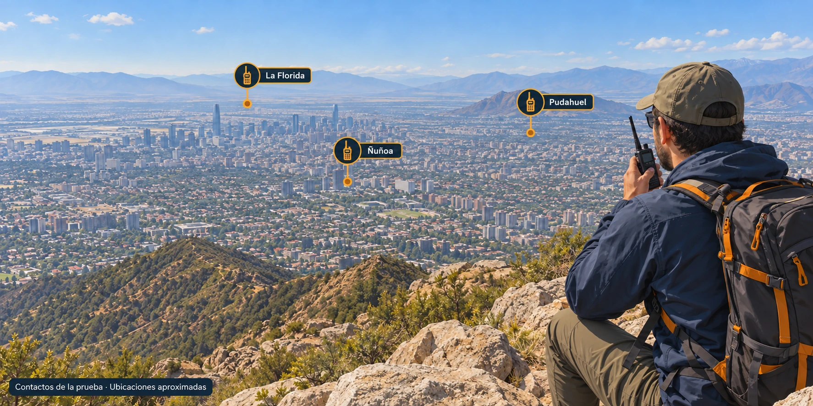

Mantener el contacto también es parte de preparar la aventura. Imagen ilustrativa generada; no es una fotografía de la prueba.
Lo que buscamos en una excursión
Transmitir un mensaje, que la otra persona lo entienda y recibir una respuesta clara. Una radio puede ayudarnos a coordinar una cordada, mantener contacto con el campamento y comunicar cambios de ruta o dificultades.
Existen muchas marcas y modelos de equipos, pero aquí compartimos pruebas reales con las radios que ya tenemos y utilizamos. Esta experiencia nos ayuda a conocer sus capacidades y límites antes de necesitarlas en una emergencia.
Explorar opciones y conocer sus límites
Está bien explorar distintas opciones. Los equipos económicos pueden funcionar bien en ciertas situaciones, incluso para comunicarse entre integrantes de una cordada o dentro de un campamento. Lo importante es probarlos en condiciones similares a las del recorrido.
Cuando dependemos de la comunicación para nuestra seguridad, necesitamos equipos confiables y probados en condiciones adversas. Conviene revisar su resistencia declarada y comprobar cómo responden durante la actividad: claridad de voz, recepción, autonomía y facilidad de manejo con frío, viento o guantes. Las pruebas deben respetar los límites de uso indicados por el fabricante.
El precio, la pantalla o el GPS no demuestran por sí solos qué tan bien comunica una radio.
Radioaficionados y profesionales: qué cambia
La diferencia principal está en el uso para el que fueron diseñados. Los equipos de radioaficionados suelen facilitar la experimentación y ofrecer ajustes accesibles al usuario. Los profesionales o comerciales suelen priorizar una operación sencilla sobre canales preparados para el trabajo.
Ambos pueden ser configurables. En los equipos de trabajo, algunos ajustes quedan restringidos para evitar cambios accidentales. Hay radios profesionales con pantalla y teclado, y equipos de radioaficionados robustos. La resistencia y la calidad del audio dependen del modelo: no basta con su categoría para evaluarlas.
Nuestra prueba desde el cerro Manquehue
Desde la cima del cerro Manquehue, en Santiago, el Baofeng UV-17 Pro GPS logró comunicación directa con personas ubicadas en La Florida, Ñuñoa y Pudahuel. Los mensajes se entendían, aunque había algo de ruido o «chicharreo».
Desde el mismo lugar y con las mismas personas en esas comunas, el AnyTone 878 consiguió una comunicación clara, descrita por quienes participaron como comparable a una llamada de celular.
El Baofeng permitió establecer el contacto. En esos contactos, quienes participaron reportaron mayor claridad y facilidad para entender los mensajes con el AnyTone. Esta es la experiencia observada en esa salida; por sí sola no permite atribuir la diferencia a la calidad del equipo ni anticipar el resultado en otros recorridos.
Esta es una comparación de uso relatada por quienes participaron. No contamos aquí con un registro de potencia, antenas, configuración y niveles de señal que permita atribuir toda la diferencia a una característica específica de las radios. El resultado describe esos contactos; no establece un alcance garantizado para cualquier recorrido.
La batería también sostiene la comunicación
Una radio debe seguir disponible durante toda la jornada. La autonomía es parte de su utilidad en terreno: evalúala según cuánto transmites, cuánto recibes y las condiciones de temperatura.
Antes de salir, carga las baterías y prepara una reserva adecuada para la duración del recorrido. La prueba del Manquehue descrita aquí compara la claridad de los contactos; no incluye una medición comparativa de autonomía.
Preparar el contacto antes de salir
1. Acuerden una frecuencia de encuentro y una alternativa, dentro de las que estén autorizados a utilizar.
2. Definan horarios de contacto y quién mantendrá la escucha, especialmente si los grupos se separarán.
3. Validen el acceso a los repetidores de la zona: configuren los canales según sus parámetros y prueben que pueden establecer contacto. Tener un repetidor guardado no demuestra que puedan acceder a él desde la ruta.
4. Prueben todas las radios entre sí, comprobando que los mensajes se entiendan en ambos sentidos.
5. Revisen la autonomía y la protección del equipo para las condiciones previstas.
6. Acuerden qué hacer si alguien no responde: cuándo volver a llamar y qué alternativa utilizar.
Durante el contacto, habla con claridad, entrega mensajes breves y pide confirmación de los datos importantes. Escucha antes de transmitir.
Cuando la comunicación importa de verdad
Eso es lo que buscamos durante una excursión: transmitir un mensaje, que la otra persona lo entienda y recibir una respuesta clara. La prueba desde el cerro Manquehue demuestra que, en determinadas condiciones, un equipo de mejor calidad sí puede marcar la diferencia.
En una emergencia sin cobertura celular, lograr comunicar tu ubicación y pedir ayuda podría salvarte la vida, siempre que alguien pueda recibir el mensaje y responder.
Por eso importa contar con una radio confiable, conocer su funcionamiento y haberla probado en terreno. Antes de salir, acuerden las frecuencias de encuentro y los horarios de contacto, y comprueben el acceso a los repetidores de la zona.
El relieve y la ubicación pueden impedir la comunicación incluso con un buen equipo. Integra la radio en tu plan de salida y prepara una alternativa si el contacto falla.
Prueba de terreno: experiencia aportada por el autor con sus equipos Baofeng UV-17 Pro GPS y AnyTone 878.